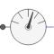
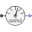

PartialAbsoluteSensorPartial model to measure a single absolute flange variable |

|
Information
This information is part of the Modelica Standard Library maintained by the Modelica Association.
This is a partial model of a 1-dim. rotational component with one flange of a shaft in order to measure an absolute kinematic quantity in the flange and to provide the measured signal as output signal for further processing with the blocks of package Modelica.Blocks.
Connectors (1)
| flange |
Type: Flange_a Description: Flange of shaft from which sensor information shall be measured |
|---|
Extended by (3)
|  |
Modelica.Mechanics.Rotational.Sensors Ideal sensor to measure the absolute flange angular acceleration |
|
Modelica.Mechanics.Rotational.Sensors Ideal sensor to measure the absolute flange angular velocity |
|
|
Modelica.Mechanics.Rotational.Sensors Ideal sensor to measure the absolute flange angle |